Je vous ai déjà parlé de la littérature réunionnaise cet été mais les fêtes de noël approchant, je me sens inspiré pour reparler littérature. J’aimerais vous suggérer un cadeau pour les enfants qui ait une couleur réunionnaise. Il s’agit de livres pour enfants, les livres de Daniel Vaxelaire.
Daniel Vaxelaire est réunionnais d’adoption, Il est né en Lorraine mais il découvre l’île à l’occasion de son service militaire dans les années 70. Il tombe très vite sous le charme et y exerce ses talents de journaliste. Son premier livre est un travail de commande des éditions Australes qui veut réaliser une somme historique de la Réunion. Il assurera pendant trois ans la direction rédactionnelle de cette encyclopédie historique en 7 volumes : Le Mémorial de La Réunion. Grâce à tous ces travaux de recherche, il va se mettre à écrire de nombreux romans historiques en commençant par Chasseurs de Noirs, un roman sur le marronage.
Le mémorial de la Réunion a fait de Daniel Vaxelaire un spécialiste des questions d'histoire à la Réunion. Le mémorial, plusieurs fois réédité est aujourd'hui difficilement trouvable. En 2016, les éditions Orphie ont chargé l'auteur d'écrire un grand livre de l'histoire de la Réunion. Cette nouvelle édition, plus claire et plus agréable est complétée et mise à jour pour le XXIème siècle. Les nombreux documents et graphiques en font un ouvrage pour tous à la fois pour la recherche que pou rles curieux. Le premier volume retrace l'histoire de l'île des origines à 1848. Le second de 1848 à 2016.
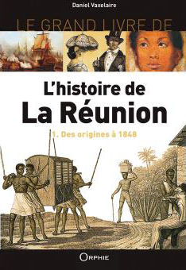 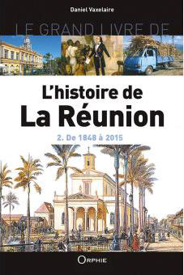
{% fnac "HistoireT1", "https://livre.fnac.com/a9454957/Daniel-Vaxelaire-L-histoire-de-La-Reunion" %} {% fnac "HistoireT2", "https://livre.fnac.com/a9454958/Daniel-Vaxelaire-L-histoire-de-La-Reunion", "right" %}
Toutes ces références me direz-vous ne sont que des livres pour les grands enfants mais très vite Daniel Vaxelaire a élargi son répertoire et fait suer sa plume pour sortir des guides de tourisme des livrets encyclopédiques ou des romans jeunesse dont les actions se passent à la Réunion lontan. Il est question de pirates, d’esclaves et de forbans et biensur, d’enfants courageux.
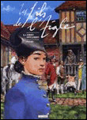 Il est aussi le scénariste de la série de bande dessinée Les fils de l’aigle dont le Tome 7 est en préparation. Il a même travaillé pour RFO où il écrivait des chroniques matinales (radio Réunion) et des scénarios de séries télévisées (Bâtisseurs d’île sur RFO).
J’aurais pu parler de lui à l’occasion de ma présentation des guides de tourisme, de la littérature réunionnaise, du marronage, de bande dessinée péi, mais l’auteur est tellement prolixe qu’il vaut bien un article complet en ce mois de Noël.
Et puisque pour cette fête mercantile, je vous ai promis de vous conseiller des livres pour enfants, voici la liste de ses romans jeunesse avec illustrations, synopsis et lien pour les acheter.
Les Fils de l’aigle est une série de bande dessinée qui se passe en métropole et dans toute l'Europe, après le premier empire. Daniel Vaxelaire en est le scénariste et Michel Faure est le dessinateur. Elle raconte les aventures de Morvan d’Andigny, le fils d’un marquis qui a été guillotiné pendant la Révolution et qui veut venger sa mort. A Marseille, il y retrouve son amour de jeunesse, Capucine qu'il ne cessera de croisé tout au long de l'aventure. 11 albums sont parus entre 1985 et 1998 sont parus chez Hachette BD puis Les Humanoïdes Associés puis Arboris. Ce dernier éditeur ayant réédité les anciens numéros en 1994 pour avoir la collection complète à son catalogue. En c'est l'éditeur Théloma, qui réédite toute la collection à nouveau. Ce sont les albums que vous pouvez retrouver en vente aujourd'hui.
Les trois éditions du premier tome : La dent du loup
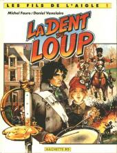 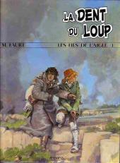 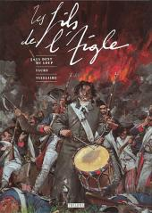
Les trois éditions du tome 4 : Capucine
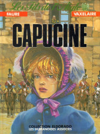 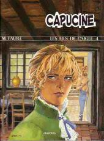 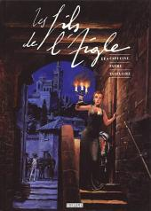
Les deux éditions du tome 10 : Albion coté jardin
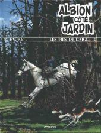 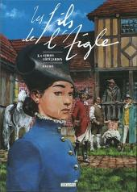 {% fnac "FilsDeLaigle", "https://www.fnac.com/Les-fils-de-l-aigle/si2604/livres" %}